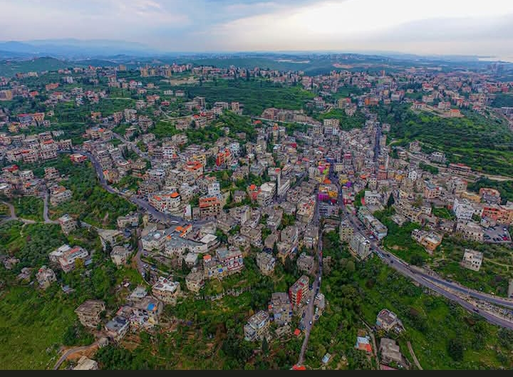
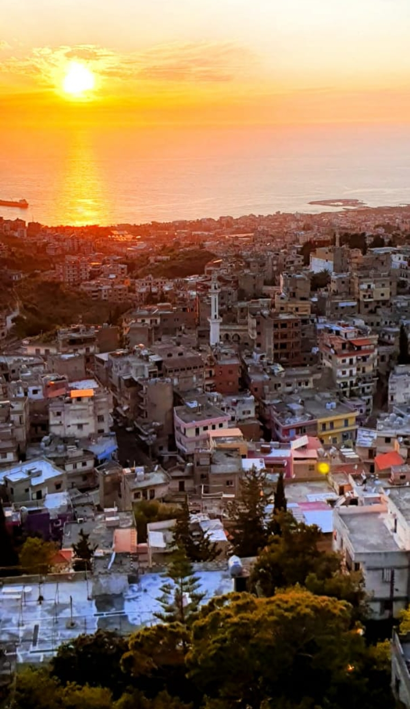

جغرافيا وموقع
تقع بلدة بَرْجا جنوب بيروت بنحو ٣٠ كم، عند الطرف الشمالي لوادي الزهراني، وتشكّل حلقة وصل بين الساحل والجبل. ترتفع بين ١٠٠ و٣٠٠ متر عن سطح البحر، فتحظى بمناخ معتدل شتاءً ومنعش صيفًا.
📍 اضغط هنا لرؤية الموقع على الخريطة

الآثار والتراث
تنتشر في محيط برجا عشرات الكهوف والمغاور المدفونة في الصخور، يعود بعضها إلى العصر الحجري الحديث. تُعد مقابر نواويس محفورة في صخور شواقي الأعالي، ورُصدت رسومات وأوانٍ فخارية خلال الحفريات. وقد زارت بعثة رينان الفرنسية هذه المنطقة عام 1863 ووصفتها بـ"المدينة المدفنية"، بعد العثور على نصب يوناني يحمل نقش "خورستوس الشريف سلام…" يعود للعام 228 م.
1. كهوف ونواويس
تكثر الكهوف المدفونة والمقابر الصخرية في محيط برجا، وتظهر فيها نقوش قديمة وأدوات فخارية يرجّح أنها استخدمت للدفن في العصر الحجري الحديث والرومان والبيزنطي.
2. قلعة النواويس
بجانب الثانوية العامة تطل على وادي سبلين، وهي مغاور صخرية يُعتقد أنها كانت تستخدم لدفن الكهنة أو كبار الشخصيات الدينية في فترات الوثنية.
3. جامع برجا الكبير
هو المعلم الرئيسي الديني في القرية، يعود إلى العصر العثماني وقد كان ولا يزال من أبرز المساجد في جبل لبنان، وقد شهد ترميمًا وتوسعات عدة خلال القرن العشرين.
النشاطات الاقتصادية والزراعية
تقع برجا ضمن منطقة خصبة تشتهر بزراعة الزيتون الذي كان مصدرًا مهمًا، وتُنتَج منها آلاف الأوكيات سنويًا عبر المعاصر التقليدية.
كما تُزرع الخروب والتين واللوز والعنب إضافة إلى زراعة التوت لتربية دودة القز وصناعة الحرير، التي اشتهرت بها قديماً وساهمت في الاقتصاد المحلي حتى القرن العشرين.
تربية النحل
اخْتَصّت برجا بإنتاج العسل بعد إنشاء حوالى 600 خلية نحل، وصدرت كميات معتبرة من العسل إلى بيروت وصيدا وغيرها.
القرية اليوم
تضم برجا حوالي 40,000 نسمة، وهي منطقة عامرة تمثل نموذجًا للحفاظ على الثقافة والعلم بتوافر مكتبة عامة ومركز ثقافي.
تتمثل الحياة الريفية فيها في الجمع بين الزراعة والحرف التقليدية، وتُعرف بمبادراتها الفنية مثل طلاء الجدران بألوان زاهية ضمن مشروع "انتفاضة الألوان" الذي أضفى روحًا شبابية وألواناً طبيعية على واجهات المباني.
التاريخ العريق
تشير لقى فخّاريّة إلى أن المنطقة مأهولة منذ العصر البرونزي، ثم ازدهرت في العهد الفينيقي كاستراحة للقوافل البحريّة. في العصر المملوكي بُنِيت فيها خزّانات مياه لحفظ الأمطار، وبقي بعضها قائمًا يُستخدم حتّى اليوم لريّ بساتين الليمون.
1. العهود الفينيقية-الرومانية-البيزنطية
تُظهر النقوش والمنحوتات ضمن المغاور والشواهد على تأثر برجا بشعوب بلاد الرافدين، الفرس، اليونانيين، الرومان والبيزنطيين.
2. العهد العثماني والأيوبي
خلال حكم الأمير فخر الدين المعني الثاني (1572–1635)، تأسس جامع تاريخي، كما شُيّدت مبانٍ ذات أقواس ونوافذ زجاجية مزخرفة من الحقبة العثمانية.
المهرجانات والفعاليات
1. مهرجان الزيتون في برجا
يُعد مهرجان الزيتون في برجا من أهم المهرجانات الزراعية التي تحتفل بها البلدة في فصل الخريف من كل عام.
2. مهرجان ليالي برجا الثقافية
في فصل الصيف، تتحول ساحة برجا ومراكزها الثقافية إلى منصّات فنية تجمع بين الفنون الشعبية والحديثة.
3. مهرجان الحرف اليدوية والتراث
يهدف إلى إحياء التراث القروي والحِرفي الذي كانت تعرف به البلدة منذ عقود.